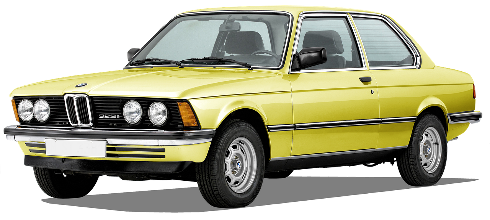
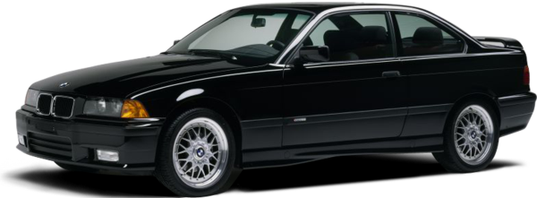
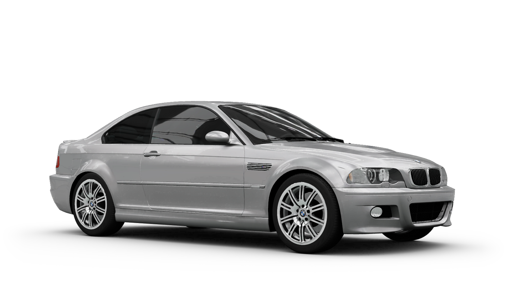
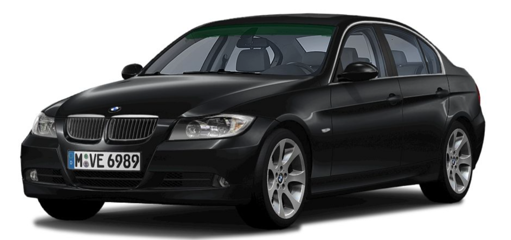
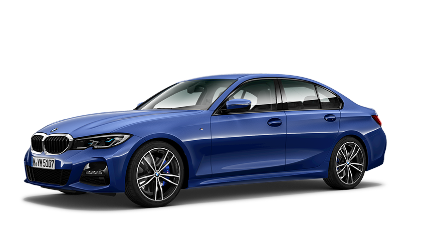

BMW AG is a German manufacturer of cars, motorcycles, engines and bicycles. Norbert Reithofer was chairman of the company from 2006 to 2015, Harald Kruger from May 2015 and Oliver Zipse from 18 July 2019. Chief Designer - Josef Kaban. The company's motto is "Freude am Fahren", with it. - "With pleasure behind the wheel." For English-speaking countries, the motto "The Ultimate Driving Machine" was also coined (from English - "Ideal car for driving").
BMW 3 Series - several generations of middle class passenger cars produced since 1975 by the German automaker BMW. They are distinguished by a large selection of bodies, a variety of engines and the presence of sports versions. The most successful car series in the company's history
E21

The first generation car (E21) was presented to the public in July 1975. It was a two-door sedan (German Limousine), which, despite its small size, looked quite solid. It featured large windows, a wedge-shaped profile and, of course, the signature "nostrils" that dominated the radiator grille. Also stood out vertically installed direction indicators and round headlights, spaced around the edges of the front end.
Bodybuilding firm Baur converted sedans into open cars called Topcabriolet. The sides and roof frame remained intact, and a folding awning was installed on top of such a model.
The cars were equipped with a four-cylinder gasoline engine, rear-wheel drive, independent front and rear suspensions. In 1977, a model appeared with a six-cylinder gasoline engine, which was capable of accelerating to a speed of 190 km / h. In 1981, just six years after the release of the first car, the millionth copy rolled off the assembly line. It was the most successful series of models of the firm at that time.
More about BMW E21
BMW 315 75 HP 1.6 l. 4 manual transmission from 1981 to 1983
BMW 316 90 HP 1.6 l. 4 manual transmission from 1977 to 1980
BMW 316 90 HP 1.8 l. 4 manual transmission from 1980 to 1983
BMW 318i 105 HP 1.8 l. 5 manual transmission from 1980 to 1983
BMW 320 122 HP 2.0 l. 5 manual transmission from 1977 to 1983
BMW 323i 143 HP 2.3 l. 5 manual transmission from 1977 to 1983
E30
At the end of 1982, the second generation cars (E30) appeared. Updated looks, improved aerodynamics, a more spacious and comfortable cabin and powerful engines were the hallmarks of these models. The shape of the car became smoother and more rounded, which was the result of numerous tests in the wind tunnel. The low location of the front end, the flat radiator grille with the “nostrils” inscribed in it and the double headlights widely spaced around the edges, visually increased the width of the car. And the smooth transition to the sidewalls not only provided good streamlining, but also formed the characteristic profile of the car
In 1983, the family four-door sedan (German Limousine) debuted, in 1985 an open convertible (German Cabrio) and a sports M3 version appeared, and in 1987 a spacious and functional station wagon (German Touring) was introduced. This was followed by diesel models and all-wheel drive versions
E36

In 1990, the third generation (E36) debuted, first as a large and spacious four-door sedan (German Limousine). The two-door model followed in 1992, now as an elegant coupé. A few months later, a convertible (Cabrio) and a sports version of the M3 appeared. A slightly tilted hood and a slightly raised trunk gave the models a dynamic look. In addition to the sleek silhouette with a rounded front end, the double headlights hidden under the glass immediately caught the eye on cars of this generation.
In 1994, a new model of this series was presented - a compact hatchback (German Compact), intended for those who needed an economical car with a sporty character.
The fastest cars were equipped with six-cylinder gasoline engines with two overhead camshafts and four valves per cylinder (DOHC), equipped with a proprietary VANOS variable valve timing system. And for economical models, four or six-cylinder turbodiesels with intercooling of charge air were offered
E46

In May 1998, the fourth generation (E46) cars were released, offering even more power, comfort and safety. And again, the models became longer and wider, and the interior grew accordingly. The typical appearance of cars has been significantly updated. The “nostrils” were now integrated into the bonnet, and the double round headlights under the glass were highlighted by a wavy line that visually separated them from the bumper and gave the models a recognizable look
E90

The fifth generation cars were introduced in 2005. Powerful engines and outstanding handling combined with original looks and innovative equipment have ensured the success of the models around the world. First appeared the four-door sedan (E90) (German: Limousine), and in 2006 the spacious station wagon (E91) (German Touring), the two-door coupe (E92) (German. Coupé) and the convertible (E93) (German . Cabrio) with rigid folding roof consisting of three parts. In 2007, the family was joined by the sports M3 model, equipped with a V8 engine with 420 hp.
All gasoline engines had direct fuel injection, and the most powerful models were equipped with turbocharged engines. Diesel engines provided good fuel efficiency and met all European emission requirements. For even greater fuel economy, some models could be equipped with a start-stop system.
F30
The sixth generation cars (F30) went on sale in early 2012. An even wider range of models was divided into two classes. The more utilitarian sedan (German Limousine), station wagon (German Touring) and liftback (German Gran Turismo) remained the 3 Series cars. The prestigious coupé, convertible and four-door coupe have been spun off into a separate 4 Series. On cars of this generation, systems appeared previously inaccessible to models of this class. Such as an eight-speed automatic transmission or a projector that displays instrument readings directly on the windshield. In addition to versions with petrol and diesel engines, hybrid models were offered for the first time
G20

The sedan (G20), which went on sale in the spring of 2019, has become even larger: longer, wider, its wheelbase has increased. A wide range of standard and custom driver assistance systems are offered, bringing the model ever closer to the limits of self-driving. Cameras, radars and ultrasonic sensors monitor the area around the vehicle and either warn the driver of danger or apply the brakes and steering wheel to prevent potential accidents.
A wide range of four and six-cylinder petrol and diesel engines, all with turbocharging and direct injection, as well as the availability of all-wheel drive and hybrid versions, can satisfy the needs of buyers of all categories.
In the future, the appearance of a station wagon (G21) and a sports version (G80) is expected, there will be no liftback (Gran Turismo) in this generation
More about BMW E21
BMW 320d 190 HP 2.0 l. 8 automatic transmissions since 2018
BMW 320d 190 HP 2.0 l. 6 manual transmissions since 2018
BMW 320d xDrive 190 HP 2.0 l. 8 automatic transmissions since 2018
BMW 330i 258 HP 2.0 l. 8 automatic transmissions since 2018
BMW 330i xDrive 258 HP 2.0 l. 8 automatic transmissions since 2018